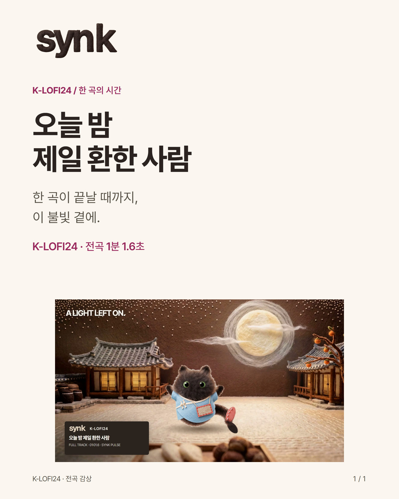

K-LOFI24 / MUSIC & SCENE
네 편 모아보기YouTube · @synkkorean / K-LOFI24
오늘 밤 제일 환한 사람
오늘 밤 제일 환한 사람 · 61.6초 전곡 감상
전곡 영상 재사용 · 새 소개 카드와 문안 · 실제 SNS 미게시
원곡 전체 61.6초 · AI 음악 제작 Suno · 장면·편집 SYNK PULSE
전곡 영상 받기곡과 장면 안내게시할 문안
한 곡이 끝날 때까지, 이 불빛 곁에.
〈오늘 밤 제일 환한 사람〉
K-LOFI24 · 원곡 전체 1분 1.6초
구름이 천천히 흐르고, 한옥 창의 불빛이 낮아졌다 돌아옵니다. 여름 델을 입은 까몽과 추석 마당에서 한 곡을 듣습니다.
AI 음악 제작 · Suno
장면·편집 · SYNK PULSE
음악과 장면을 묶어 만든 감상 영상입니다. 가입이나 댓글 없이 처음부터 끝까지 들을 수 있습니다.
같은 세계의 음악: YouTube @synkkorean의 K-LOFI24
새 소개 카드
